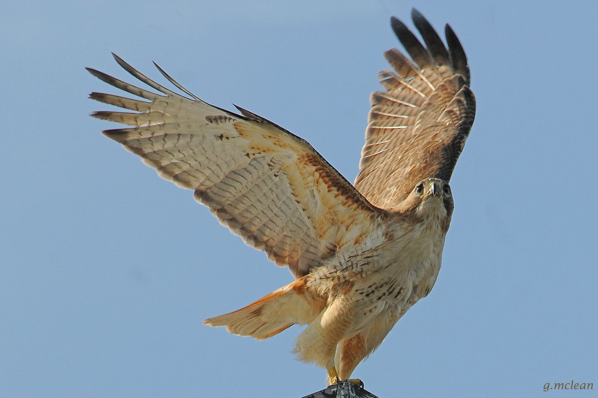
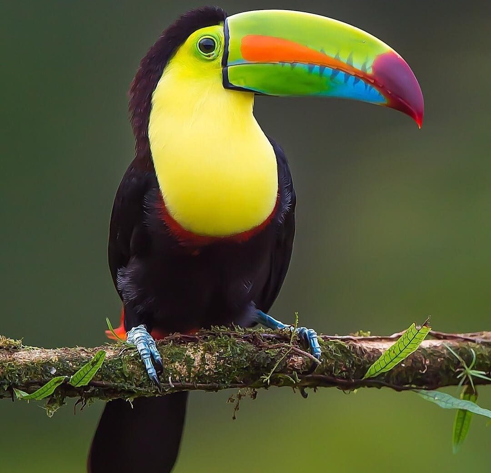
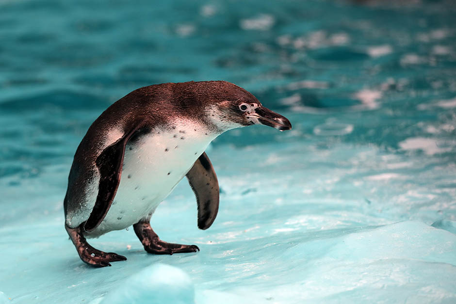

Životinja: Orao belorepan
Naučno ime: Haliaeetus albicilla
Životni vek: 20 - 25 godina
Visina: 70 - 90 cm
Porodica: Accipitridae
Masa: 15 kg
Orao belorepan ili štekavac, vrsta je ptice iz porodice jastrebova i
najveći je orao Evrope. Perje je braon boje sa svetlijim delovima sa
spoljašnje i unutrašnje strane krila. Sa zrelošću ptice svetlije
nijanse dobijaju na intenzitetu. Potpuno beo rep je znak pune
zrelosti. Dužina od repa do glave je od 70 do 90 santimetara dok
raspon krila varira između 2.0 do 2.4 metra. Rasprostranjen je od
severne Evrope (zapadna Irska, obala Norveške) prema istočnoj i
Južnoj, pa preko zemalja bivšeg SSSR-a na istok do Kamčatke i Japana.
Do pre jedne decenije bio je na ivici istrebljenja ali je intenzivnim
merama zaštite broj ptica u divljini značajno porastao i danas je
njegova evropska populacija stabilna.

Ptice

Životinja: Tukan
Naučno ime: Ramphastidae
Životni vek: 20 – 25 godina
Visina: 29 - 63 cm
Porodica: Giraffidae
Masa: 130 - 680 g
Tukani su porodica ptica koja pripada rodu detlića (Piciformes). Imaju izuzetno velik kljun, a vrsta sa najvećim kljunom je Toko tukan (Ramphastots toco), sa dužinom kljuna od 23 cm. Tukani su nezgrapne ptice veličine od 29 cm i 130 g kod vrste Pteroglossus inscriptus do 63 cm i 680 g kod Toko tukana. Imaju upadljiv veliki kljun koji je kod mužjaka obično duži. Iako izgleda težak, vrlo je lagan jer tanka prevlaka prekriva šuplju unutrašnjost kljuna. Ponekada se kljun slomi, ali neke ptice uspevaju dugo preživeti, pa čak i kada im je slomljen velik deo kljuna. Tukani se hrane uglavnom voćem. Neke vrste i aktivno love guštere, zmije, ptiće i ptičija jaja. Tukani žive u tropskim predelima Južne Amerike, to jest u prašumama Brazila, Centralne Amerike i na karipskim ostrvima. Ima ih od Meksika na severu do severne Argentine na jugu. Retko kad se mogu sresti na nadmorskoj visini većoj od 3.650 m.
Naučno ime: Ramphastidae
Životni vek: 20 – 25 godina
Visina: 29 - 63 cm
Porodica: Giraffidae
Masa: 130 - 680 g
Tukani su porodica ptica koja pripada rodu detlića (Piciformes). Imaju izuzetno velik kljun, a vrsta sa najvećim kljunom je Toko tukan (Ramphastots toco), sa dužinom kljuna od 23 cm. Tukani su nezgrapne ptice veličine od 29 cm i 130 g kod vrste Pteroglossus inscriptus do 63 cm i 680 g kod Toko tukana. Imaju upadljiv veliki kljun koji je kod mužjaka obično duži. Iako izgleda težak, vrlo je lagan jer tanka prevlaka prekriva šuplju unutrašnjost kljuna. Ponekada se kljun slomi, ali neke ptice uspevaju dugo preživeti, pa čak i kada im je slomljen velik deo kljuna. Tukani se hrane uglavnom voćem. Neke vrste i aktivno love guštere, zmije, ptiće i ptičija jaja. Tukani žive u tropskim predelima Južne Amerike, to jest u prašumama Brazila, Centralne Amerike i na karipskim ostrvima. Ima ih od Meksika na severu do severne Argentine na jugu. Retko kad se mogu sresti na nadmorskoj visini većoj od 3.650 m.


Životinja: Pingvin
Naučno ime: Sphenisciformes
Životni vek: 6 - 20 godina
Visina: 40 - 110 cm
Porodica: Spheniscidae
Masa: 20 – 35 kg
Pingvini su monotipični red vodenih, neletećih ptica, koje žive uglavnom na južnoj hemisferi. Jedini član reda je istoimena porodica Spheniscidae. Pingvini su prilagođeni životu u vodi sa krilima koja su evoluirala u peraja. Perje im je crno na leđima, dok je na trbuhu bijelo. Hrane se račićima, ribom, lignjama i drugim morskim životinjama koje love dok plivaju pod vodom. Pod vodom provode skoro polovinu svog života. Iako su sve vrste pingvina porijeklom sa južne hemisfere, oni ne žive samo u oblastima sa hladnom klimom, poput Antarktika. U stvari, samo nekoliko vrsta pingvina živi toliko južno. Nekoliko vrsta živi u umerenom pojasu, a jedna vrsta - galapagoški pingvin, živi blizu ekvatora. Najveća živa vrsta je carski pingvin; najveći predstavnici ove vrste su visoki oko 1,1 m i teški oko 35 kg. Najmanja vrsta pingvina je patuljasti pingvin, čiji su pripadnici visoki oko 40 cm i teški 1 kg. Veće vrste pingvina naseljavaju hladnije predjele, dok se manji pingvini mogu pronaći u umjerenim ili čak tropskim oblastima. Neke praistorijske vrste pingvina su dostizale džinovske razmjere, visine i težine poput odraslog čovjeka.
Naučno ime: Sphenisciformes
Životni vek: 6 - 20 godina
Visina: 40 - 110 cm
Porodica: Spheniscidae
Masa: 20 – 35 kg
Pingvini su monotipični red vodenih, neletećih ptica, koje žive uglavnom na južnoj hemisferi. Jedini član reda je istoimena porodica Spheniscidae. Pingvini su prilagođeni životu u vodi sa krilima koja su evoluirala u peraja. Perje im je crno na leđima, dok je na trbuhu bijelo. Hrane se račićima, ribom, lignjama i drugim morskim životinjama koje love dok plivaju pod vodom. Pod vodom provode skoro polovinu svog života. Iako su sve vrste pingvina porijeklom sa južne hemisfere, oni ne žive samo u oblastima sa hladnom klimom, poput Antarktika. U stvari, samo nekoliko vrsta pingvina živi toliko južno. Nekoliko vrsta živi u umerenom pojasu, a jedna vrsta - galapagoški pingvin, živi blizu ekvatora. Najveća živa vrsta je carski pingvin; najveći predstavnici ove vrste su visoki oko 1,1 m i teški oko 35 kg. Najmanja vrsta pingvina je patuljasti pingvin, čiji su pripadnici visoki oko 40 cm i teški 1 kg. Veće vrste pingvina naseljavaju hladnije predjele, dok se manji pingvini mogu pronaći u umjerenim ili čak tropskim oblastima. Neke praistorijske vrste pingvina su dostizale džinovske razmjere, visine i težine poput odraslog čovjeka.